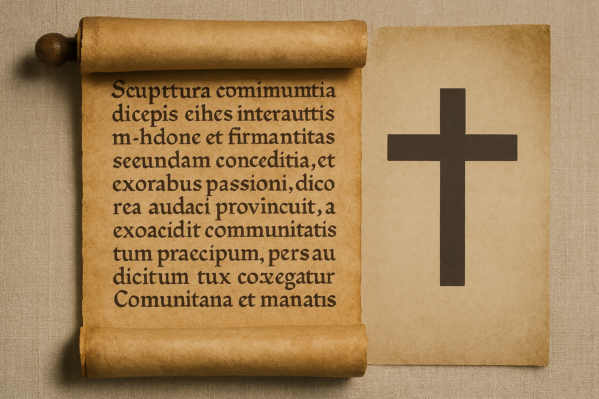

Lic. Isaac Arias García
Especialista en Teología Espiritual, Teología Histórica, Teoría de Sistemas, Consultoría y Ciencias Sociales



Especialista en Teología Espiritual, Teología Histórica, Teoría de Sistemas, Consultoría y Ciencias Sociales

Docente bilingüe con formación en Relaciones Internacionales y Teología Espiritual. Cuento con más de 6 años de experiencia en educación media superior y universitaria, impartiendo materias en inglés relacionadas con ciencias sociales, filosofía, historia y literatura. Mi enfoque combina pensamiento crítico, ética global y espiritualidad aplicada a contextos educativos e internacionales.
Docente de Bachillerato y Primaria 100% en inglés.
Asignaturas: Introducción a las Ciencias Sociales, Filosofía, Literatura Estadounidense, Historia Universal.
Docente de Inglés y Ciencias Sociales en secundaria, con enfoque intercultural.
Docente universitario de inglés para estudiantes de Odontología, Derecho y Administración.
“El movimiento ecuménico y la iglesia católica romana en el subsistema internacional religioso.”
Disponible en el repositorio institucional de la BUAP.
Correo: ariasike@gmail.com
Teléfono: (222) 114-8885
LinkedIn: Perfil Profesional